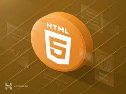

HTML

HTML adalah bahasa markup standar untuk membuat halaman website. Bahasa ini berfungsi untuk membuat struktur website hingga menyusun format teks dan gambar pada halaman web. Walaupun HTML bukan bahasa pemrograman, Anda wajib mempelajarinya jika Anda ingin menjadi web developer yang andal. Di artikel ini,kami akan menjelaskan secara lengkap apa itu HTML, fungsinya, komponennya, dan cara kerjanya.
CSS

CSS adalah salah satu istilah teknis dalam pemrograman. Meski sering dianggap sebuah bahasa pemrograman, CSS bukanlah bagian dari bahasa itu. Kata Tech Terms, CSS adalah salah satu styling language (bahasa desain), bagian dari markup language yang dapat “mewarnai” atau mendesain suatu halaman website. CSS sendiri adalah singkatan dari Cascading Style Sheet. Markup language ini biasanya dipasangkan dengan markup language (bahasa marka) seperti HTML. Apakah kamu bingung dengan penjelasan teknis ini? Intinya, CSS merupakan tools pelengkap HTML yang digunakan untuk mengubah tampilan suatu situs.
Js

javaScript adalah bahasa pemrograman yang digunakan developer untuk membuat halaman web yang interaktif. Dari menyegarkan umpan media sosial hingga menampilkan animasi dan peta interaktif, fungsi JavaScript dapat meningkatkan pengalaman pengguna situs web. Sebagai bahasa skrip sisi klien, JavaScript adalah salah satu teknologi inti dari World Wide Web. Misalnya, saat menjelajah internet, kapan pun Anda melihat carousel gambar, menu tarik-turun klik untuk menampilkan, atau warna elemen yang berubah secara dinamis di halaman web, Anda melihat efek JavaScript.